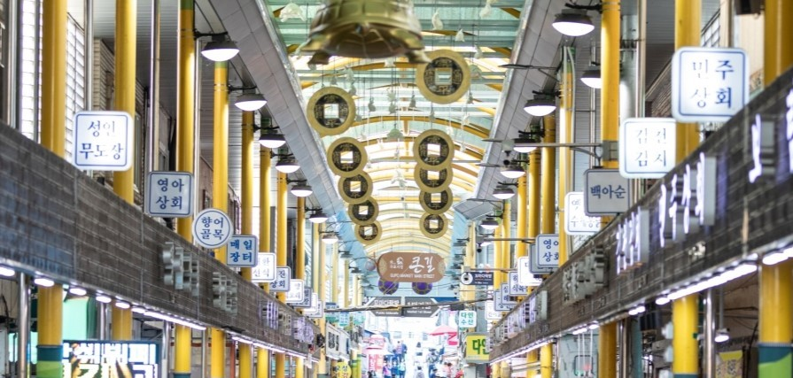
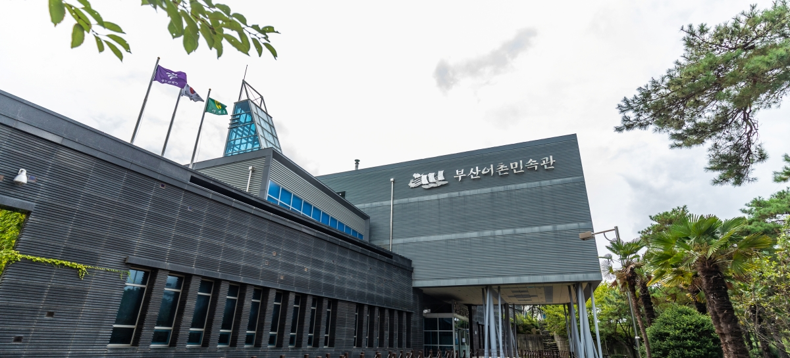
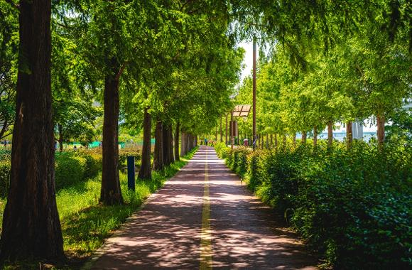
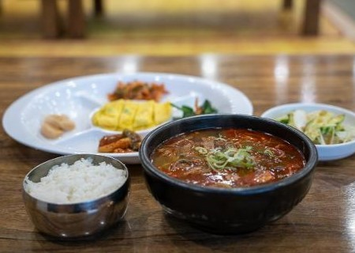
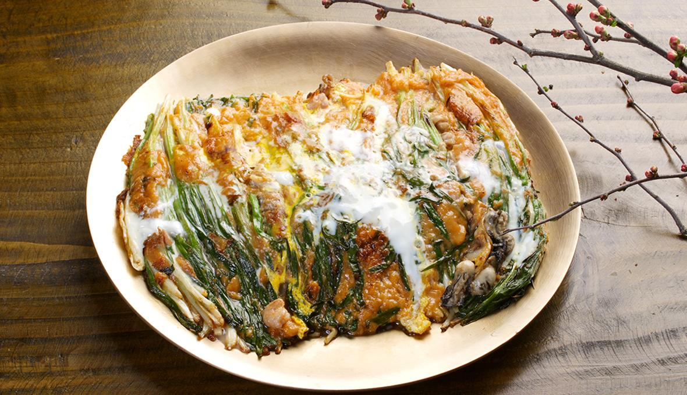

――인기 명소――――――――――――――――――――――――

구포시장에서 만나는
다양한 전통 먹거리
다양한 전통 먹거리

어촌문화를 꽃피운
선조들의 삶을
엿볼 수 있는 이곳,
부산어촌민속관
선조들의 삶을
엿볼 수 있는 이곳,
부산어촌민속관
재미없고 지루한 법은
이제 안녕!
솔로몬로파크
이제 안녕!
솔로몬로파크

피크닉을 즐기며
계절의 싱그러움을
만끽할 수 있는
화명생태공원
계절의 싱그러움을
만끽할 수 있는
화명생태공원
――인기 맛집――――――――――――――――――――――――

금강만두

동래할매파전

모모스커피

초록담미역국
참고 https://www.flaticon.com/kr/
https://visitbusan.net/kr/index.do
https://visitbusan.net/kr/index.do
날씨 API